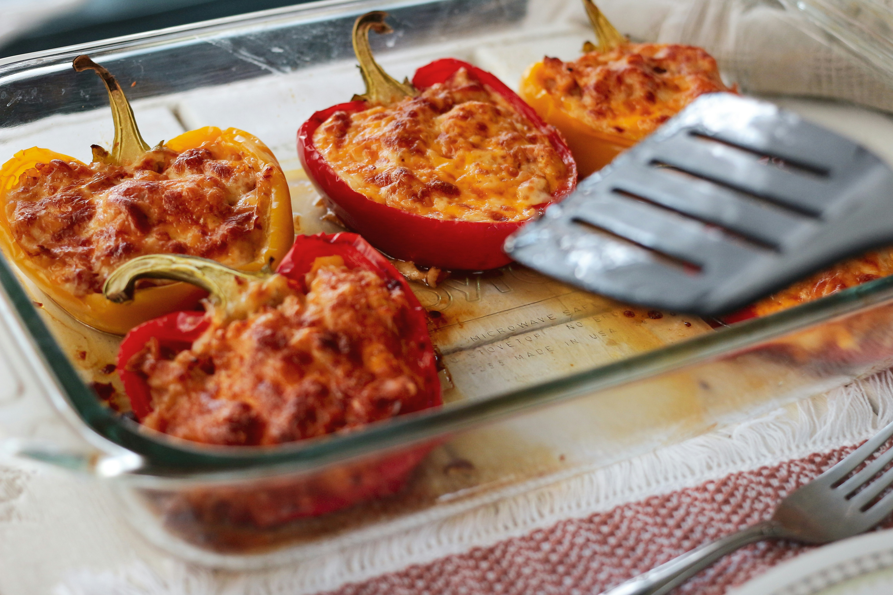

Stuffed Pepper Recipe

Stuffed peppers have been a staple in my household
for as long as i can remember.
Ingredients
- 7 or 8 bell peppers. I try to find larger ones
I can stand them up.
- 1 pound of meat of your choice, i prefer ground turkey.
- 1 onion
- 2 cloves of garlic
- a splash of your favorite oil
- 2 cups cooked rice
- 1 can of tomato passata or tomato sauce
- italian seasoning
- salt
- black pepper
- shredded cheese of your choice
How it's done:
- Preheat the oven to 350 degrees
- Prepare peppers for stuffing by slicing in half and pulling out the guts.
- Pre bake the peppers in a tall baking dish. lightly brush with oil and bake for 10 minutes.
- Splash your oil in a pan and add your minced onion. Cook until translucent, add garlic, stirring until fragrant. Brown ground meat, seasoning to taste with salt, pepper, and italian seasoning. Drain.
- Stir in rice and tomato passata and simmer for about 5 minutes. Season to taste.
- Stuff peppers with mixture and top with shredded cheese. Pour a small amount of water in the dish, enough to create steam.
- Bake for about 15 minutes.
Home